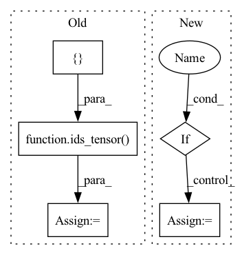

Pattern ID :33175

Before Change
// create hypothetical next token and extent to next_input_ids
next_tokens = ids_tensor((self.batch_size, 1), config["vocab_size"], dtype="int64")
next_token_types = ids_tensor([self.batch_size, 1], self.type_vocab_size, dtype="int64")
// append to next input_ids
next_input_ids = paddle.concat([input_ids, next_tokens], axis=-1)
After Change
next_input_ids = paddle.concat([input_ids, next_tokens], axis=-1)
output_from_no_past = model(next_input_ids, return_dict=self.parent.return_dict)
if self.parent.return_dict:
output_from_no_past = output_from_no_past[0]
output_from_past = model(next_tokens, use_cache=True, cache=past, return_dict=self.parent.return_dict)[0]
// select random slice
In pattern: SUPERPATTERN
Frequency: 4
Non-data size: 5
Instances
Fragment ID: 95881879
Project Name: paddlepaddle/paddlenlp
Commit Name: db3bde142ca2da76bfc701cd4ecc17140c248060
Time: 2022-12-06
Author: 40912707+Yam0214@users.noreply.github.com
File Name: tests/transformers/gpt/test_modeling.py
M Class Name: GPTModelTester
N Class Name: GPTModelTester
M Method Name: create_and_check_gpt_model_past(4)
N Method Name: create_and_check_gpt_model_past(4)
M Parent Class:
N Parent Class:
M File Name: tests/transformers/gpt/test_modeling.py
N File Name: tests/transformers/gpt/test_modeling.py
M Start Line: 185
M End Line: 200
N Start Line: 186
N End Line: 203
'>
Before Change
def prepare_config_and_inputs(self) -> Tuple[Dict[str, Any], Tensor, Tensor, Tensor]:
config = self.config
input_ids = ids_tensor([config.batch_size, config.seq_length], config.vocab_size)
input_mask = None
if config.use_input_mask:
input_mask = random_attention_mask([config.batch_size, config.seq_length])
After Change
input_ids = ids_tensor([self.batch_size, self.seq_length], self.vocab_size)
input_mask = None
if self.use_input_mask:
input_mask = random_attention_mask([self.batch_size, self.seq_length])
token_type_ids = None
if self.use_token_type_ids:
'>
Fragment ID: 95881878
Project Name: paddlepaddle/paddlenlp
Commit Name: 428c21a246f93dea64a181d3825db9be8fc512aa
Time: 2023-02-28
Author: 35913314+1649759610@users.noreply.github.com
File Name: tests/transformers/skep/test_modeling.py
M Class Name: SkepModelTester
N Class Name: SkepModelTester
M Method Name: prepare_config_and_inputs(1)
N Method Name: prepare_config_and_inputs(1)
M Parent Class:
N Parent Class:
M File Name: tests/transformers/skep/test_modeling.py
N File Name: tests/transformers/skep/test_modeling.py
M Start Line: 91
M End Line: 102
N Start Line: 90
N End Line: 100
'>
Before Change
token_type_ids = None
if self.config.use_token_type_ids:
token_type_ids = ids_tensor([config.batch_size, config.seq_length], config.type_vocab_size)
sequence_labels = None
token_labels = None
choice_labels = None
After Change
input_ids = ids_tensor([self.batch_size, self.seq_length], self.vocab_size)
input_mask = None
if self.use_input_mask:
input_mask = random_attention_mask([self.batch_size, self.seq_length])
token_type_ids = None
if self.use_token_type_ids:
'>
Fragment ID: 95881877
Project Name: paddlepaddle/paddlenlp
Commit Name: 8d63af54fdac61a222f6738d2af3402328e76d96
Time: 2023-03-28
Author: 709153940@qq.com
File Name: tests/transformers/tinybert/test_modeling.py
M Class Name: TinyBertModelTester
N Class Name: TinyBertModelTester
M Method Name: prepare_config_and_inputs(1)
N Method Name: prepare_config_and_inputs(1)
M Parent Class:
N Parent Class:
M File Name: tests/transformers/tinybert/test_modeling.py
N File Name: tests/transformers/tinybert/test_modeling.py
M Start Line: 96
M End Line: 113
N Start Line: 193
N End Line: 208
'>
Before Change
// create hypothetical next token and extent to next_input_ids
next_tokens = ids_tensor((self.batch_size, 3), config["vocab_size"], dtype="int64")
next_token_types = ids_tensor([self.batch_size, 3], self.type_vocab_size, dtype="int64")
next_mask = ids_tensor((self.batch_size, 3), vocab_size=2, dtype="int64")
// append to next input_ids
next_input_ids = paddle.concat([input_ids, next_tokens], axis=-1)
After Change
output_from_no_past = model(
next_input_ids, attention_mask=next_attention_mask, return_dict=self.parent.return_dict
)
if self.parent.return_dict:
output_from_no_past = output_from_no_past[0]
output_from_past = model(
next_tokens,
attention_mask=next_attention_mask,
'>
Fragment ID: 95881883
Project Name: paddlepaddle/paddlenlp
Commit Name: db3bde142ca2da76bfc701cd4ecc17140c248060
Time: 2022-12-06
Author: 40912707+Yam0214@users.noreply.github.com
File Name: tests/transformers/gpt/test_modeling.py
M Class Name: GPTModelTester
N Class Name: GPTModelTester
M Method Name: create_and_check_gpt_model_past_large_inputs(4)
N Method Name: create_and_check_gpt_model_past_large_inputs(4)
M Parent Class:
N Parent Class:
M File Name: tests/transformers/gpt/test_modeling.py
N File Name: tests/transformers/gpt/test_modeling.py
M Start Line: 255
M End Line: 261
N Start Line: 263
N End Line: 280